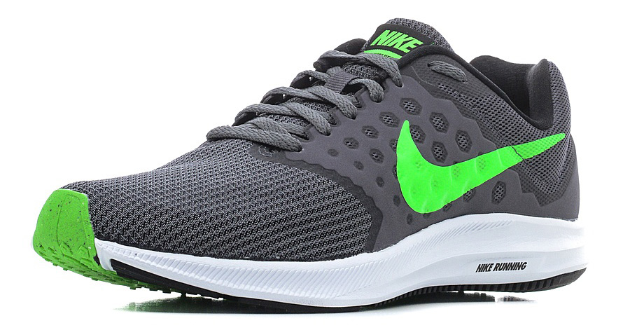

Кроссовки NIKE DOWNSHIFTER 7
Мужские беговые кроссовки Nike Downshifter 7
КупитьХарактеристики товара
- Вид застежки: Шнуровка
- Материал подкладки обуви: Искусственный материал
- Материал подошвы обуви: искусственный материал
- Материал стельки: искусственный материал
- Полнота обуви (EUR): F (6)
- Форма мыска: круглый
- Назначение обуви: бег
- Тип подошвы: протекторная
- Вид мыска: закрытый
- Сезон: демисезон
- Пол: Мужской
- Страна бренда: Соединенные Штаты
- Страна производитель: Вьетнам
- Комплектация: кроссовки
Подробное описание товара
Мужские беговые кроссовки Nike Downshifter 7 в минималистичном стиле из легкой однослойной сетки и мягкого пеноматериала обеспечивают абсолютный комфорт.
Таблица размеров
| Российский размер | Длина стопы, в см | US размер | Размер производителя |
|---|---|---|---|
| 39 | 24.5 | 7 | 7 |
| 40 | 25 | 7.5 | 7,5 |
| 40,5 | 25.4 | 8 | 8 |
| 41 | 25.8 | 8.5 | 8,5 |
| 42 | 26.2 | 9 | 9 |
| 43 | 26.7 | 9.5 | 9,5 |
| 43,5 | 27.1 | 10 | 10 |
| 44 | 27.5 | 10.5 | 10,5 |
| 45 | 27.9 | 11 | 11 |
| 46 | 28.3 | 11.5 | 11,5 |
| 46,5 | 28.8 | 12 | 12 |
| 47 | 29.2 | 12.5 | 12,5 |
| 47,5 | 29.6 | 13 | 13 |
| 48,5 | 30.5 | 14 | 14 |